From Proven Agent to
Delivery Accelerator
We turned a working, governed AI agent on Amazon Bedrock AgentCore into the seed of a reusable, config-driven accelerator our practice can deploy for client after client.
Built once. The value is in doing it again — fast.
- 1.A production-realistic, event-driven AI agent already runs end-to-end on AWS Bedrock AgentCore — the hard engineering is done.
- 2.Today, every new client would mean rebuilding it by hand: slow, inconsistent, costly, and harder to govern.
- 3.The opportunity: a config-driven accelerator our team clones, configures and deploys per client — reuse instead of rebuild.
For the AI practice this is leverage: the first build becomes an asset, not a one-off. Every future engagement starts most of the way to done.
A working, autonomous, governed agent — not slideware
Event-driven & autonomous
A member email flows through SES → S3 → EventBridge → Lambda → AgentCore Runtime, with no human trigger. It just runs.
Multi-agent reasoning
Specialist agents work in sequence — understand → decide → execute → learn — to read, verify, draft and review.
Safe by design
Regulated cases route to a person; a Cedar policy engine and a Bedrock Guardrail keep every action in bounds.
It runs on 7 AgentCore services + a Bedrock Guardrail and deploys with one command. That breadth is exactly what makes it a strong accelerator seed.
Built on AWS Bedrock AgentCore — we don't rebuild the plumbing
Runtime
Hosts the multi-agent container; secure inbound auth; streaming.
Gateway
Managed tool discovery + invocation over Lambda functions.
Identity
Handles service-to-service OAuth tokens; no secrets in code.
Memory
Semantic recall + summarization for context across contacts.
Policy Engine
Cedar policies enforced before every tool call.
Guardrail
Blocks personal financial advice in generated drafts.
Observability & Eval
Traces, logs, search + built-in quality metrics.
+ CDK deploy
One-command infrastructure, repeatable per client.
AWS owns the managed platform; we invest only in the reusable pattern and the client config — faster delivery, lower risk.

Compliance is built in, not bolted on
🧑⚖️ Human-in-the-loop
Every regulated, unverified or advice-seeking case routes to a person. The agent drafts; humans decide and send.
🛡 Policy engine (Cedar)
Authorization is checked before every tool call — the agent can only do what policy allows.
🚧 Bedrock Guardrail
Blocks personal financial advice and writes a safe hand-off to a human instead of an unsafe answer.
🔒 Per-client isolation
One AWS account / stack per client → clean data, security and cost separation by design.
Every run is fully auditable — traces, logs, transaction search and evaluation metrics. Governance travels with the accelerator: each new client inherits the same controls by default.
The engine is reusable. The domain becomes configuration.
♻️ Reusable engine (build once)
🎯 Client domain (configure)
The investment: push everything on the right into a declarative client config behind stable extension points.

Reuse turns a one-off build into repeatable margin
Faster time-to-value
A new client becomes configure + deploy, not build-from-zero. The pattern, tools and infra are already there.
Consistent quality & governance
The same tested engine, controls and eval gates ship every time — quality doesn't depend on who builds it.
Lower cost & risk per engagement
Far less bespoke code to write, review and maintain — the expensive, risky part is done once.
Practice differentiation
A demonstrable, governed agentic-AI capability we can show and reuse across pitches and industries.
Definition of done: stand up a completely different domain (e.g. IT-incident or HR) with config changes only and zero core edits.
Three milestones to a proven, repeatable accelerator
Harden & define
Lock the baseline with tests, then design the client-config spec and the stable extension points the engine exposes.
Config-driven engine
Externalize the domain (prompts, tools, data, routing, policies) and add flexible triggers, scaffolding and one-command provisioning.
Proven second domain
Build a different domain end-to-end with config only — the validation that the accelerator truly repeats.
A detailed plan (~40 tasks with roles, effort and dependencies) sits behind this for the delivery team.